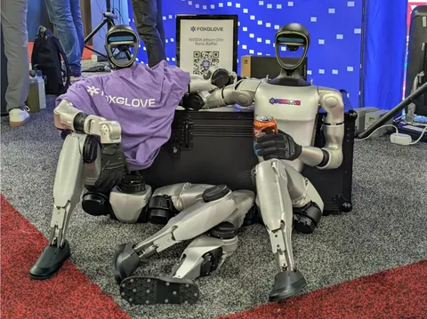
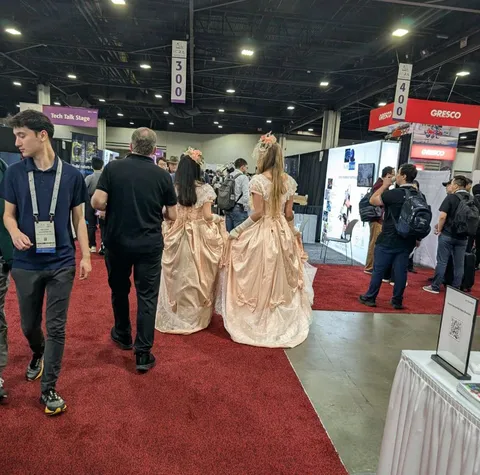
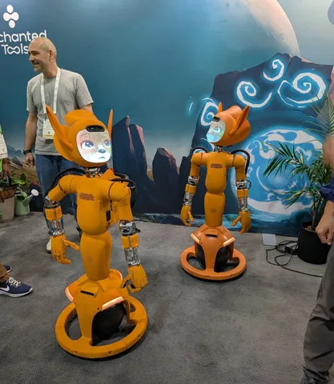

В конце мая в США прошла ICRA — топ-1 по цитируемости конференция в области робототехники. На мероприятии побывала руководитель службы исследования алгоритмов нового поколения Мария Голицына. Она делится статьями на тему автономного транспорта, а ещё — фотографиями самых разных роботов. В разборе уместилось лишь несколько работ — полный список отобранных Марией статей можно увидеть по ссылке.
Mitigating Covariate Shift in Imitation Learning for Autonomous Vehicles Using Latent Space Generative World Models
Первым, с кем удалось поговорить на воркшопах, был Александр Попов — один из авторов статьи. Он работает в NVIDIA, где несколько сотен человек занимаются разработкой беспилотных автомобилей. В частности, команда развивает подход perception-to-trajectory: на входе — изображение с камеры, на выходе — траектория, по которой едет машина.
В работе обсуждается проблема covariate shift — отклонений от распределения, на котором модель обучалась. Это частая проблема в imitation learning: агент может оказаться в состояниях, которых не было в демонстрациях эксперта, и начинает совершать ошибки.
Авторы предлагают решение — использовать замкнутый цикл (closed-loop training) с генеративной моделью мира, работающей в латентном пространстве. В этой схеме берутся исторические данные с камер, затем система «закрывает глаза» и делает последовательность шагов вперёд в латентном пространстве — в статье это 12 шагов. На каждом шаге сравнивается действие эксперта и действие, предсказанное, чтобы выровнять распределения.
Дополнительно используется лосс, который приближает распределения латентных переходов модели к тем, что наблюдаются в обучающих данных. Это помогает агенту научиться возвращению к траектории даже в ситуациях, когда он ушёл далеко.
Completing Explicit 3D Reconstruction via View Extrapolation with Diffusion Priors
Другая работа — о 3D-реконструкции с помощью дополнения недостающих видов. Это идея, которая сейчас витает в воздухе: если у нас есть всего несколько ракурсов объекта, и их не хватает для точной реконструкции, можно дополнить недостающие изображения сгенерированными диффузионной моделью.
Авторы используют diffusion priors, чтобы «достроить» недостающие виды (view extrapolation), а затем делают реконструкцию по расширенному набору. Базовая модель — Foundation-модель MVDream, которая работает с несколькими изображениями на входе. Если подавать больше сгенерированных видов (например, 3 + 3, 3 + 6), качество итоговой реконструкции улучшается.
Правда, есть нюанс: диффузионка может выдать неконсистентные виды, и в этом случае качество ухудшается. Но по мере того как сами модели улучшаются, подход начинает работать всё стабильнее. В этом исследовании как раз демонстрируется, что сгенерированные виды действительно помогают улучшить результат. Таких работ на конференции было много — идея активно развивается.
Uncertainty-Guided Enhancement on Driving Perception System via Foundation Models
Одна из немногих работ на ICRA, где LLM используется в контексте вождения. Идея простая: если perception-система не уверена в своём предсказании, можно подстраховаться с помощью foundation-модели. То есть модель делает предсказание и оценивает его надёжность. Если уверенность высокая — используем результат. Если низкая — подключаем LLM, которая даёт своё предсказание, и берём то, что надёжнее.
LLM тут не участвует в обучении и не делает инференс постоянно — её подключают только по необходимости. Это скорее механизм уверенного доуточнения, чем полноценный модуль восприятия.
Подводя итог, можно сказать, что ICRA, как и многие крупные конференции, — ещё и отличная площадка для нетворкинга. Удалось поговорить и обменяться идеями с инженерами из Zoox, Waymo, Nuro, Motional, Loxo и других компаний, которые занимаются автономным транспортом.
ML Underhood
